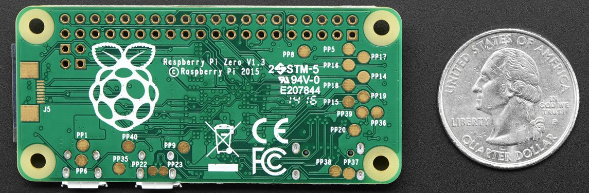
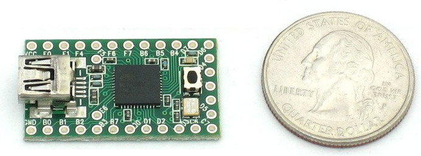

Catherine Holloway, Qubitekk
Catherine Holloway (@femion, CatherineH)
|  |  |
Images from Adafruit
| Raspberry Pi Zero* | Teensy 3.2 | |
| Price | 5$ (20$) + 5$ | 12$ (20$) |
| Boot time | 35 s | < 1 s |
| Digital I/O | 18 pins | 34 pins |
| Digital I/O speed | 22 MHz** | 115 kHz |
| Analog I/O | None | 14 pins |
| Storage | 14 GB | 262 kB |
| RAM | 512 MB | 64 kB |
* 16 Gb storage card with Rasbpian lite ** C + RasPi hardware libraries
( show serial connection)